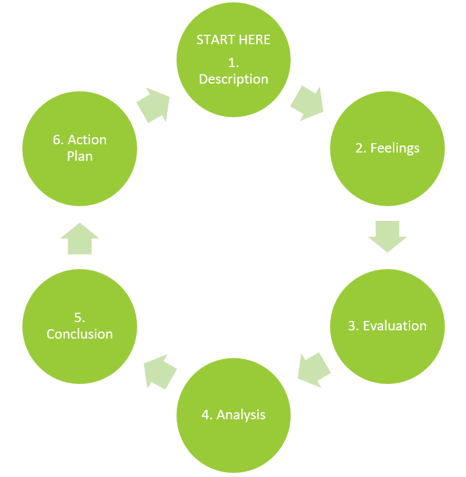

Unit 1 Developing a Reflective Practice
Overview
Welcome to LDRS 667 Practicum: Personal and Professional Practice and Reflection. In this course, you will engage in reflective practice, as you complete your practicum in coaching and facilitation in a professional learning setting.
Take a moment now to review the learning outcomes for this course:
Learning Outcomes
Upon successful completion of this course, you should be able to:
- Synthesize adult learning theory with practical experience facilitating or teaching
- Design authentic and inclusive learning experiences
- Demonstrate effective teaching/facilitation skills to support critical and creative thinking
- Integrate cross-cultural competency into the teaching/learning process
- Apply assessment strategies to measure student learning
- Synthesize personal identity, values, and beliefs into the facilitation and teaching process
- Engage in reflective practice within a facilitation/teaching role
In this practicum, you have the opportunity to put what you have learned in your graduate courses into practice within a professional context. Experiential learning is a powerful and rich learning opportunity.
“Teaching and learning can become inherently spontaneous and student-centered when moved from the confines of the classroom into the world at large. From the collaborative learning atmosphere that results from the unique relationships developed outside the classroom, to the deep learning that occurs when students must put into practice “in the real world” what they have theorized about from behind a desk, field experiences are unmatched in their learning potential” (Claiborne, Morrell, Bandy, & Bruff, 2018).
In addition to applying your learning, you will also establish a practice of reflection, engaging in ongoing self-evaluation and analysis of your coaching/facilitation experience in order to continually refine your professional practice. It is our hope that you will not only enhance your coaching and facilitation skills through practice and reflection, but that you will also establish a practice of reflection that will enhance your professional effectiveness throughout your career.
In this practicum, you will design and implement lesson plans that include:
- student learning outcomes,
- learning activities, and
- assessment of student learning.
Through this process, you will apply what you have learned in prior classes related to:
- adult learning theory,
- authentic and culturally inclusive learning experiences,
- cultural competency, and
- synthesizing your personal identity and values into your teaching/facilitation practice.
In this unit, we will focus on the concept and strategies of reflective practice, preparing you to engage in reflection throughout your practicum experience, using the Gibbs’ Reflective Cycle (1988). In order to maximize your learning, you will engage in reflective practice throughout this practicum, as you design three different lessons and facilitate those (or other) lessons during your practicum. Reflective practice can also be applied to other elements of your practicum, such as discussion facilitation (online or face-to-face), the design of learning activities, implementation of learning activities, and assessment of student learning.
Learning Outcomes
When you have completed this unit you should be able to:
Synthesize personal identity, values, and beliefs with personal learning outcomes for practicum experience.
Describe key elements of reflective practice.
Activity Checklist
Here is a checklist of learning activities you will benefit from in completing this unit. You may find it useful for planning your work.
Learning Activities
- Review adult learning theory principles in:
- Merriam, S. (2001). Andragogy and self-directed learning: Pillars of adult learning theory. New Directions for Adult and continuing Education, 89. Jossey-Bass. Article is available through the TWU Library.
- Larrivee, B. (2000). Transforming teaching practice: Becoming the critically reflective teacher. Reflective Practice, 1(3), 293–307.
- Forrest, M. E.S. (2008). On becoming a critically reflective practitioner. Health Information & Libraries Journal, 25(3), 229-232. Article is available through the TWU Library.
- Claiborne, L., Morrell, J., Bandy, J., & Bruff, D., 2018. Teaching Outside the Classroom.
- Read: Mulder, P. (2018). Gibbs’ Reflective Cycle by Graham Gibbs.
- Read: University of Edinburgh (n.d.). Gibbs Reflective Cycle.
- Merriam, S. (2001). Andragogy and self-directed learning: Pillars of adult learning theory. New Directions for Adult and continuing Education, 89. Jossey-Bass. Article is available through the TWU Library.
Assessment
Reflective Practice Discussion 1: Experiential Learning
Write a discussion post describing the context in which you will conduct your experiential learning (practicum). (Consider whether you want or need to keep the site anonymous and, if so, be sure to avoid identifying details.) List your proposed learning outcomes, assessment, and integrate your identity, values, and beliefs as a teacher/facilitator.
Reflective Practice Discussion 2: Applying a Reflective Practice Model
Outline a plan for how you will apply the key elements of the Gibbs’ Reflective Cycle, in your classroom observations and teaching/facilitation experience.
1.1 Developing a Reflective Practice
In this practicum, you will have an opportunity to implement coaching and facilitation strategies that you have learned in prior courses. You will consider how adult learning theory can enhance student learning as you design learning experiences for students. You will practice culturally inclusive facilitation methods, seek to create an authentic learning community, and practice your coaching/facilitation skills to enhance transformational learning. A practicum provides an important framework for practicing and applying the skills and techniques you have developed. This practice, combined with critical reflection, will allow you to continue to grow and develop as a professional.
Reflective practice provides a framework for thinking of our work as educators, challenging us not just to do but to continually refine our practice. Through this process, we are challenged to continually evaluate and assess our own teaching and how it influences student learning.
Larrivee (2000) argues that “When teachers become reflective practitioners, they move beyond a knowledge of discrete skills to a stage where they integrate and modify skills to fit specific contexts, and eventually, to a point where the skills are internalized enabling them to invent new strategies” (p. 294). Similarly, Palmer (2017) contends that “good teaching cannot be reduced to technique; good teaching comes from the identity and integrity of the teacher” (p. 10).
Reflective practice, or “critical reflection” as Larrivee (2000) refers to it, is “a personal awareness discovery process” (p. 296). She argues against a prescribed process, but instead advocates for ongoing commitment to “making time for solitary reflection, becoming a perpetual problem-solver and questioning the status quo” (Larrivee 1999, as cited in Larrivee, 2000, p. 296). She suggests that a reflective journal can be an important tool for self-engagement.
Building on this recommendation, in this class you will engage in ongoing written reflection on your learning. For each lesson that you design, you will engage in reflection through Reflective Practice Discussion posts. Writing can be a powerful learning experience, as we engage in reflection and critical analysis of the new concepts we discover. Through regular writing, we are challenged to think critically, organize, and integrate these new concepts with our prior understanding.
Read the following articles and websites on adult learning theory principles. As you read, consider the role of reflective practice in your practicum experience. Be thinking about how you would engage in reflective practice through each element of your practicum: classroom observation, lesson plan design, and facilitation/teaching elements of your practicum.
Activity: Read and Reflect
Review adult learning theory principles in Merriam, S. (2001). Andragogy and self-directed learning: Pillars of adult learning theory. New Directions for Adult and continuing Education, 89. Jossey-Bass. Article is available through the TWU Library.
1.2 Gibb’s Reflective Cycle (1988)
Reflective practice generally includes elements of self-evaluation, assessment of experience, reflective questioning, and conclusions or further inquiry. It is often conducted individually, but can also include elements of peer observation and feedback. As Larrivee (2000) argues, critical reflection also involves questioning of the status quo, including “examining the assumptions that underlie classroom practices” (p. 297). This is particularly important, since most of us have been students ourselves: we can too easily fall into the habit of replicating the way we have been taught, without evaluating the effectiveness of those practices.
Larrivee (2000) describes a process of critical reflection that involves three stages, arguing that the process is “more cyclical than linear, more incremental than sequential” (p. 304). The process she lays out includes the three key elements/stages of “examination,” “struggle,” and “perceptual shift” (p. 305).
As you prepare for your coaching/facilitation experiences in your practicum, you are challenged to consider the value of reflective practice, and how you can develop your own practice of self-reflection and critical inquiry. We will explore Gibbs’ Reflective Cycle, which you will use throughout this practicum.
Gibb’s Reflective Cycle (1988) includes six steps: description, feelings, evaluation, analysis, conclusion, and action plan. As you engage in your professional practice through this practicum, you will be asked to complete these steps for each element of the practicum (i.e. classroom observation, lesson plan design, and facilitation).

- Description: You will begin by describing the teaching/facilitation experience (or the process of designing a lesson plan).
- Feelings: You will consider the feelings (and the feelings of students) during the teaching/learning process.
- Evaluation: In this step, you will evaluate the experience.
- Analysis: You will then analyze the experience. At this stage, you will find it helpful to look at the experience through the lens of the literature you have read in previous courses.
- Conclusion: At this stage, you will draw conclusions about your teaching/learning experience.
- Action Plan: Based on the previous steps, you will develop steps to take to continually improve your teaching/facilitation practice.
In the Learning Activities, you will review resources that provide a deeper look at Gibbs’ Reflective Cycle. As you review those resources, begin thinking about how you will apply these within your practicum setting. You will write about this in your Reflective Practice Discussion 2.
Activity: Read and Reflect
- Read: Larrivee, B. (2000). Transforming teaching practice: Becoming the critically reflective teacher. Reflective Practice, 1(3), 293–307.
- Read: Forrest, M. E. S. (2008). On becoming a critically reflective practitioner. Health Information & Libraries Journal, 25(3), 229-232. Article can be accessed through the TWU Library.
- Read: Claiborne, L., Morrell, J., Bandy, J., & Bruff, D., 2018. Teaching Outside the Classroom.
- Read: Mulder, P. (2018). Gibbs Reflective Cycle by Graham Gibbs.
- Read: University of Edinburgh (n.d.). Gibb’s Reflective Cycle.
Unit Summary
In this first unit, you have had the opportunity to learn about reflective practice, and how it can help you develop as a facilitator. Engaging in reflective practice throughout your practicum as you participate in classroom observation, designing lesson plans, and facilitating learning can help you develop a process through which you become a critically reflective practitioner throughout your career.
Assessment
Reflective Practice Discussion 1: Experiential Learning
Write a discussion post. Describe the context in which you will conduct your experiential learning (practicum). (Consider whether you want or need to keep the site anonymous and, if so, be sure to avoid identifying details.) List the learning outcomes you developed for your practicum experience (from your Practicum Proposal). Specifically describe how you will assess your own learning. Discuss how your practicum experience will align with your personal identity, values, and beliefs as a teacher/facilitator.
Respond to the posts of two other learners, providing reflective feedback on their learning outcomes, practicum experience, and/or their integration of their identity, values, and beliefs with their practicum plans.
Reflective Practice Discussion 2: Applying a Reflective Practice Model
Outline a plan for how you will apply the key elements of Gibb’s (1988) Reflective Cycle, in your classroom observations and teaching/facilitation experience.
Respond to the posts of two other learners, providing suggestions for how they might maximize their experience of the reflective cycle in their practicum.
Rubric: Reflective Practice Discussion Rubric (Click to expand)
| Unsatisfactory 0% | Developing 50% (C) | Proficient 75% (B) | Exemplary 100% (A) | |
|---|---|---|---|---|
| APA/WRITING | Paper does not model language and conventions used in scholarly literature. Writing is not well-organized. Several errors in grammar or composition. Sources are not cited. APA citations are not appropriately formatted. | Paper partially models language and conventions used in scholarly literature. Writing is somewhat well organized and includes some errors in grammar or composition. Not all sources cited. APA citations are generally formatted correctly, with several errors. | Paper consistently models language and conventions used in scholarly literature. Writing is well-organized and includes few (if any) errors in grammar or composition. All resources are appropriately cited (including in-text citations and bibliography information). Few (if any) errors in APA citations. | Paper is an exemplar of language and conventions used in scholarly literature. Writing is well-organized and free of errors in grammar or composition. All resources are appropriately cited. No errors in APA format. |
| DEVELOPING a COHESIVE and LOGICAL ACADEMIC ARGUMENT | Does not make a focused, cohesive, or logical academic argument. Paper is confusing, and is missing an introduction, body, or conclusion. Transitions between sections and ideas are missing. | Makes an academic argument that is only partially focused, cohesive and logical. Paper is generally organized, but is missing an introduction, body, or conclusion. Transitions between sections and ideas are unclear. | Makes a focused, cohesive, logical academic argument. Paper is effectively organized and includes an introduction, body, and conclusion. Transitions between sections and ideas are clear. | Makes a focused, cohesive, logical and compelling academic argument. Paper is effectively organized and includes an introduction, body, and conclusion. Transitions between sections and ideas are clear, and build on each other. |
| INTERVIEW SYNOPSIS and ANALYSIS | Does not include a detailed discussion of key elements of a culturally-inclusive learning community, including the physical environment, teacher/student relationships, and key aspects of the community. Does not include an analysis. | Lists but does not discuss key elements of a culturally-inclusive learning community, including the physical environment, teacher/student relationships, and key aspects of the community. Includes a partial analysis. | Includes a detailed discussion of key elements of a culturally-inclusive learning community, including the physical environment, teacher/student relationships, and key aspects of the community. Includes a thoughtful analysis. | Includes a detailed discussion of key elements of a culturally-inclusive learning community, including the physical environment, teacher/student relationships, and key aspects of the community. Includes a thoughtful analysis, integrating scholarly literature to support analysis and furthering scholarly thinking related to inclusive learning environments. |
| SCHOLARLY INTEGRATION | Does not integrate references to support claims and assertions made in the paper. | Integrates references to support some of the claims and assertions made in the paper. | Integrates references to support claims and assertions made in the paper. | Integrates references to support claims and assertions made in the paper, effectively synthesizing different perspectives and research results from scholarly sources. |
| TOTAL | 0= 0% (F) | 10 = 50% (C) | 15 = 75% (B) | 20 = 100% (A+) |
References
- Claiborne, L., Morrell, J., Bandy, J., & Bruff, D. (2018). Teaching outside the classroom. Vanderbilt University Center for Teaching. Retrieved from: https://cft.vanderbilt.edu/guides-sub-pages/teaching-outside-the-classroom
- Forrest, Margaret E. S. (2008). On becoming a critically reflective practitioner. Health Information & Libraries Journal, 25(3), 229-232.
- Larrivee, B. (2000). Transforming teaching practice: Becoming the critically reflective teacher. Reflective Practice, 1(3), 293–307. Retrieved from: http://ed253jcu.pbworks.com/w/page/f/Larrivee_B_2000CriticallyReflectiveTeacher.pdf
- Merriam, S. (2001). Andragogy and self-directed learning: Pillars of adult learning theory. New Directions for Adult and continuing Education, 89. Jossey-Bass.
- Mulder, P. (2018). Gibbs’ Reflective Cycle by Graham Gibbs. Retrieved from: https://www.toolshero.com/management/gibbs-reflective-cycle-graham-gibbs/
- University of Edinburgh (n.d.). Gibbs’ Reflective Cycle. Retrieved from: https://www.ed.ac.uk/reflection/reflectors-toolkit/reflecting-on-experience/gibbs-reflective-cycle